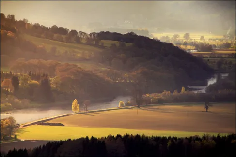

MTVM - Chương 11

Chương 11
Trên quảng trường nóng như đổ lửa khi chúng tôi bước ra sau bữa trưa với hành lý và cần câu để đi Burguete. Nhiều người đã yên vị trên nóc xe buýt, và những người khác đang trèo lên một chiếc thang bên thành xe. Bill đi tới và Robert ngồi cạnh Bill để giữ chỗ cho tôi trong lúc tôi quay trở lại khách sạn để lấy vài chai rượu mang đi. Khi tôi bước ra ngoài xe buýt đã chật cứng người. Đàn ông và đàn bà ngồi trên cả hành lý và các thùng hàng trên nóc xe, và tất cả các bà đều phe phẩy chiếc quạt của mình dưới nắng. Tiết trời nóng nực. Robert trèo xuống và tôi ngồi vào cái chỗ mà gã giữ lại cho tôi trên một chiếc ghế gỗ chạy dọc nóc xe.
Robert Cohn đứng dưới bóng râm của mái vòm chờ xe lăn bánh. Một người Basque với bình rượu bằng da láng bóng đặt trên đùi đang nằm dài trên nóc chiếc xe ngay trước hàng ghế của chúng tôi, dựa lưng vào chân chúng tôi. Ông đưa bình rượu mời Bill và tôi, và khi tôi nâng chiếc bình lên miệng, ổng giả giọng tiếng còi ô tô giống và đột ngột đến mức tôi bị sặc rượu, và mọi người cười phá lên. Ông ta xin lỗi và để tôi uống bù ngụm khác. Ông lại giả giọng tiếng còi xe một lúc sau đó, và tôi bị lừa lần thứ hai. Ông ta quả có biệt tài về vụ này. Những người Basque thích thú với trò đùa. Người đàn ông ngồi kế bên Bill nói chuyện với anh bằng tiếng Tây Ban Nha và Bill chẳng hiểu gì cả, nên anh mời người đàn ông một chai rượu. Người đàn ông xua tay. Ông nói rằng trời nóng quá và ông đã uống quá nhiều lúc ăn trưa rồi. Khi Bill đưa chai rượu ra lần thứ hai thì ông đón lấy và uống một hơi dài, và rồi chai rượu được truyền đi khắp chiếc xe. Mọi người đều lịch sự tu một ngụm, và rồi họ bắt chúng tôi phải đóng nắp cái chai lại mà cất đi. Tất cả bọn họ đều muốn chúng tôi uống rượu từ những cái bình bằng da của họ. Họ là những người nông dân trên chiếc xe đi lên cao nguyên.
Cuối cùng, sau một vài hồi còi giả, chiếc xe cũng bắt đầu lăn bánh, và Robert Cohn vẫy tay chào tạm biệt chúng tôi, và tất cả hành khách người Basque trên xe đều vẫy tay chào tạm biệt gã. Ngay khi chúng tôi bắt đầu di chuyển trên con đường ra khỏi thị trấn không khí trở nên mát mẻ hẳn. Cảm giác thật dễ chịu khi đi lên cao và rất gần bên dưới những hàng cây. Chiếc xe đi khá nhanh và tạo ra một làn gió mát, và khi chúng tôi đi dọc con đường ám bụi nơi những tán cây và nhìn xuống dưới đồi, chúng tôi có được một khung cảnh đẹp, đằng sau những tán cây, thị trấn hiện lên từ cái dốc phía trên dòng sông. Người đàn ông Basque nằm dựa vào đầu gối tôi với bàn tay cầm cổ bình rượu da chỉ cho chúng tôi thấy khung cảnh thanh bình này, và nháy mắt với chúng tôi. Ông gật đầu.
“Đẹp đấy chứ, nhỉ?”
“Những người Basque này tuyệt quá,” Bill quay sang tôi.
Người Basque nằm dựa vào chân tôi có làn da rám nắng như màu da ngựa. Ông mặc một chiếc áo khoác ngoài màu đen giống những người khác. Có những nếp nhăn nơi chiếc cổ rám nắng của ông. Ông quay sang và đưa bình rượu mời Bill. Bill mời ông một trong số chai rượu của chúng tôi. Người Basque lắc lắc ngón tay trỏ và trả lại chai rượu, vỗ vỗ vào cái bần rượu bằng lòng bàn tay. Ông nâng túi rượu lên.
“Arriba[1]! Arriba!” ông nói. “Nâng nó lên.”
Bill nâng bình rượu lên và để cho dòng rượu đổ vào miệng, đầu anh ngửa ra sau. Khi anh ngừng uống và đặt bình rượu xuống vài giọt rượu chảy dọc cằm anh.
“Không! Không!” nhiều người Basque cùng kêu lên. “Không phải như thế.” Một người giật lấy bình rượu khỏi tay chủ nhân của nó, mà bản thân ông ta cũng đang định làm động tác hướng dẫn. Anh ta là một tay còn trẻ và cầm bình rượu dài bằng cả cánh tay và nâng nó lên thật cao, vặn túi da bằng tay để cho rượu đổ vào mồm. Anh ta giữ nguyên vị trí của cái túi, rượu đổ thành một dòng mỏng manh, theo hình cung vào mồm, và anh ta tiếp tục tu một cách thuần thục và dễ dàng.
“Này!” người chủ bình rượu kêu lên. “Rượu của ai đấy?”
Người uống lúc lắc ngón tay út với anh ta và mỉm cười với chúng tôi bằng mắt. Và rồi anh ta dốc ngược chiếc bình, uống vội vàng một ngụm trước khi trả lại nó về với chủ. Anh ta nháy mắt với chúng tôi. Người chủ buồn bã lắc cái bình rượu của mình.
Chúng tôi vượt qua thị trấn và dừng lại trước một posada[2], và người lái xe chất lên xe rất nhiều gói hàng. Rồi chúng tôi lại tiếp tục hành trình, và bên ngoài thị trấn con đường bắt đầu dốc lên nơi những ngọn núi. Chúng tôi đi qua khu vực nông trang với những ngọn đồi đầy đá dốc xuống những cánh đồng. Cánh đồng lúa mạch kéo dài đến tận triền đồi. Giờ đây khi chúng tôi lên cao hơn gió cao nguyên thổi bạt cả những cây lúa mạch. Con đường trắng xóa và đầy bụi, và bụi cuộn lên dưới bánh xe và lơ lửng phía sau chúng tôi. Con đường bò lên ngọn đồi và bỏ lại cánh đồng phì nhiêu nằm bên dưới. Giờ chỉ còn lại những mảnh ruộng nhỏ bên triền đồi trọc và ở mỗi bên của con lạch. Chúng tôi ngoặt gấp bên đường để tránh một hàng sáu con la, con này nối đuôi con kia, kéo một chiếc xe cao chất đầy hàng nặng trĩu. Chiếc xe và lũ la dính đầy bụi. Ngay phía sau là một đàn la và một chiếc xe khác. Chiếc này chở đầy gỗ xẻ, và arriero[3] kéo lũ la lại rồi kéo một cái hãm bằng gỗ để chúng tôi vượt lên trước. Lên đến đây đất đai khá cằn cỗi và các ngọn đồi đều đầy đá sỏi và đất sét cứng nứt nẻ.
Chúng tôi lượn một vòng mới đến được thị trấn, và cả hai bên bỗng nhiên mở ra một thung lũng xanh ngát. Một con suối chảy qua trung tâm thị trấn và các cánh đồng nho ôm lấy những ngôi nhà.
Xe dừng lại trước một posada và nhiều hành khách bước xuống, và rất nhiều hành lý được dỡ xuống khỏi nóc xe từ bên dưới một tấm bạt lớn. Bill và tôi bước xuống và đi vào posada. Trong đó có một căn phòng thấp, tối tăm chất đầy yên và cương ngựa, và những cái chĩa được làm từ thứ gỗ có màu trắng, và hàng đống đùi lợn muối và những tảng thịt xông khói và tỏi trắng và những dây xúc xích dài được treo lủng lẳng trên trần nhà. Căn phòng mát lạnh và mờ tối, và chúng tôi đứng trước một quầy gỗ dài với hai người phụ nữ phục vụ đồ uống. Đằng sau họ là những cái kệ chứa đầy hàng hóa.
Mỗi chúng tôi gọi một aguardiente[4] và trả bốn mươi xentim[5] cho hai chén rượu. Tôi đưa cho người phụ nữ năm mươi xentim cho tiền típ, và cô đưa lại tôi một đồng xu, nghĩ rằng tôi bị nhầm lẫn về giá cả.
Hai trong số những người bạn Basque của chúng tôi bước vào và nằng nặc mời chúng tôi một ly. Rồi họ mua rượu và rồi chúng tôi mời lại họ, và rồi họ vỗ lưng chúng tôi và mua mời chúng tôi ly nữa. Rồi chúng tôi lại mời, và rồi tất cả chúng tôi đều bước ra ngoài ánh mặt trời sáng chói và oi bức, và trèo trở lại nóc chiếc xe buýt. Giờ thì có rất nhiều chỗ cho tất cả mọi người ngồi trên ghế, và người đàn ông Basque mà nãy giờ nằm trên nóc xe quay ra ngồi giữa chúng tôi. Người phụ nữ bán rượu cho chúng tôi ban nãy bước ra và lấy tay phủi tạp dề của cô và nói chuyện với ai đó bên trong chiếc xe. Rồi người lái xe bước ra với hai túi thư bằng da vung vẩy trong tay và leo lên xe, và mọi người vẫy tay chào khi chúng tôi bắt đầu khởi hành.
Con đường bỏ lại thung lũng xanh ngay tức khắc, và chúng tôi lại tiếp tục leo đồi. Bill và người chủ bình rượu da người Basque nói chuyện với nhau. Một người đàn ông dựa vào đầu bên kia ghế ngồi và hỏi bằng tiếng Anh: “Các ông là người Mỹ?”
“Vâng.”
“Tôi đã đến đó,” ông ta nói. “Bốn mươi năm trước.”
Đó là một ông già, da cũng nâu như những người khác, với một bộ râu màu trắng mọc lởm chởm.
“Như thế nào ạ?”
“Anh bảo sao?”
“Nước Mỹ như thế nào ạ?”
“À, tôi tới California. Cũng được.”
“Sao ông lại đi?”
“Anh bảo gì?”
“Tại sao ông lại quay về đây?”
“À! Tôi về để cưới vợ. Tôi định quay lại đấy nhưng bà vợ tôi không thích đi xa. Các cậu từ đâu đến?”
“Thành phố Kansas.”
“Tôi đến đấy rồi,” ông nói. “Tôi đã đến Chicago, St. Louis, Kansas, Denver, Los Angeles, Salt Lake.”
Ông cẩn thận kể ra từng cái tên.
“Ông ở đấy bao lâu?”
“Mười lăm năm. Rồi tôi về đây và cưới vợ.”
“Ông làm một ngụm nhé?”
“Được đó,” ông nói. “Các cậu không có mấy thứ này ở Mỹ, hử?”
“Có nhiều lắm nếu ông đủ tiền trả.”
“Mấy cậu đến đây làm gì?”
“Bọn cháu đi dự lễ hội ở Pamplona.”
“Các cậu thích đấu bò à?”
“Vâng. Còn ông?”
“Ừ,” ông trả lời. “Chắc là có thích.”
Rồi sau một lúc:
“Giờ mấy cậu đi đâu?”
“Bọn cháu lên Burguete câu cá.”
“Ô,” ông nói, “chúc các cậu sát cá nhé.”
Ông bắt tay với chúng tôi và quay người lại. Những người Basque khác đều ấn tượng. Ông ngồi thoải mái và mỉm cười với chúng tôi khi tôi quay đầu lại ngắm cảnh. Nhưng nỗ lực nói tiếng Mỹ dường như làm ông phát mệt. Ông chẳng nói gì nữa cả trong suốt phần còn lại của chuyến đi.
Xe buýt chậm rãi leo lên con đường dốc. Đất đai cằn cỗi và đá sỏi lộ ra từ mặt đất sét. Hai bên đường không có lấy một bụi cỏ. Nhìn lại, chúng tôi có thể thấy miền quê trải ra phía bên dưới. Phía xa đằng sau những cánh đồng là những khoảng vuông màu xanh và nâu trên triền đồi. Nơi chân trời là màu nâu của núi. Chúng tạo thành những hình thù kì lạ. Khi chúng tôi lên càng cao thì đường chân trời cũng thay đổi. Vì xe buýt bò chậm chạp trên đường nên chúng tôi có thể nhìn thấy những ngọn núi hiện ra từ phía nam. Và rồi con đường lên tới đỉnh, bằng phẳng và đi vào một khu rừng. Đó là một rừng gỗ sồi được người dân ở đây khai thác sản xuất nút bần rượu, và ánh nắng xuyên qua những tán cây thành từng dải sáng mỏng manh, và có những con gia súc đang nhởn nhơ gặm cỏ sau những gốc cây. Chúng tôi đi qua rừng và con đường hiện ra và lượn vòng theo sự dâng cao của địa hình, và phía trước mặt chúng tôi là một đồng bằng màu xanh, với những ngọn núi tối màu đằng xa. Chúng không giống như những rặng núi nâu bị hun nóng mà chúng tôi vừa bỏ lại phía sau. Chúng có màu của gỗ và các cụm mây tràn xuống từ đó. Màu xanh của đồng bằng trải dài cho tới khi nó bị cắt ngang bởi những hàng rào của trại gia súc và màu trắng của con đường hiện ra qua những thân cây sóng đôi xuyên đồng bằng về phương bắc. Khi chúng tôi tiến tới rìa cao nguyên, chúng tôi nhìn thấy những mái ngói màu đỏ và những ngôi nhà quét vôi màu trắng của vùng Burguete nhấp nhô dưới đồng bằng, và xa kia ở lưng chừng ngọn núi màu đen đầu tiên là mái ngói màu xám kim loại của tu viện xứ Roncesvalles.
“Đấy là Roncevaux[6],” tôi chỉ cho Bill.
“Đâu?”
“Đằng kia nơi rặng núi bắt đầu.”
“Trên đấy hẳn lạnh lắm,” Bill nói.
“Nó cao mà,” tôi trả lời. “Ít nhất cũng phải một ngàn hai trăm mét.”
“Thế thì lạnh kinh,” Bill khẳng định.
Xe buýt đi xuống một con đường bằng phẳng thẳng tiến đến Burguete. Chúng tôi qua một ngã tư và một cây cầu bắc ngang con suối. Những ngôi nhà ở Burguete trải dài hai bên đường. Không có đường cắt ngang. Chúng tôi đi qua nhà thờ và sân trường học, và xe dừng lại. Chúng tôi xuống xe và người lái xe giúp chúng tôi dỡ hành lý cùng cần câu xuống. Một người lính đeo súng cacbin với chiếc mũ đội hếch lên và một cái quai đeo chéo bằng da màu vàng tiến tới.
“Trong này có gì?” ông ta chỉ vào hộp cần câu.
Tôi mở nó ra cho ông ta xem. Ông ta yêu cầu kiểm tra giấy phép câu cá của chúng tôi và tôi trình nó ra. Ông ta kiểm tra ngày tháng và vẫy cho chúng tôi đi.
“Mọi chuyện ổn cả chứ?” tôi hỏi.
“Vâng. Dĩ nhiên.”
Chúng tôi đi lên phố, qua những ngôi nhà được xây bằng đá màu trắng mà giờ đã ngả màu, những gia đình ngồi bên khung cửa dõi theo chúng tôi, để tới nhà nghỉ.
Người đàn bà béo điều hành nhà nghỉ bước ra từ gian bếp và bắt tay chúng tôi. Bà ta lấy kính ra, chùi mắt kính, rồi lại đeo vào. Bên trong nhà nghỉ mát lạnh và gió bắt đầu nổi lên ở ngoài kia. Người đàn bà sai một cô gái dẫn chúng tôi lên phòng ở trên lầu. Căn phòng có hai giường, một bồn rửa, một tủ quần áo, và một bức điêu khắc lớn có khung bằng thép của Nuestra Señora de Roncesvalles[7]. Gió đang quật vào cánh cửa chớp. Căn phòng nằm ở hướng bắc của ngôi nhà. Chúng tôi rửa ráy, mặc vào áo len, và đi xuống dưới nhà dùng bữa. Phòng ăn có nền bằng đá, trần thấp, và lát gỗ sồi. Các cửa chớp đều được kéo lên và lạnh đến nỗi có thể nhìn thấy khói bốc ra từ hơi thở.
“Chúa tôi!” Bill nói. “Mai trời không thể lạnh thế này được. Tớ sẽ không trầm mình dưới suối trong thời tiết kiểu này đâu.”
Nơi góc phòng đằng sau những chiếc bàn gỗ có một chiếc dương cầm và Bill bước tới và bắt đầu chơi.
“Tớ phải giữ ấm thân nhiệt,” anh nói.
Tôi bước ra ngoài và tìm bà chủ và hỏi thăm về tiền phòng và giá cả các dịch vụ. Bà ta cất tay dưới tạp dề và tránh ánh mắt của tôi.
“Mười hai peseta.”
“Sao, chúng tôi chỉ trả giá đấy ở Pamplona.”
Bà ta chẳng nói gì cả, chỉ tháo kính ra và chùi nó bằng cái tạp dề.
“Như thế thì nhiều quá,” tôi phản đối. “Ở khách sạn lớn chúng tôi cũng chỉ phải trả có từng đấy.”
“Chúng tôi có phòng tắm.”
“Bà có phòng nào rẻ hơn không?”
“Mùa hè thì không. Giờ đang mùa cao điểm.”
Chúng tôi là những kẻ duy nhất ngụ trong cái nhà nghỉ này. Ôi, tôi nghĩ, cũng may là chỉ có vài ngày.
“Giá này có kèm rượu chứ?”
“Ồ, vâng.”
“À,” tôi nói. “Thế thì được.”
Tôi quay trở lại với Bill. Anh phà hơi về phía tôi để chứng minh rằng trời đang lạnh đến thế nào, và tiếp tục chơi đàn. Tôi ngồi bên một chiếc bàn và ngắm những bức hình treo trên tường. Có một bức vẽ hình những con thỏ, đã chết, một con gà lôi, cũng đã chết, và một bức vẽ những con vịt đã chết. Những bức tranh đều tối tăm và ám khói. Có một chiếc tủ ly bày đầy những chai rượu. Tôi cẩn thận ngắm nhìn chúng. Bill vẫn tiếp tục đánh đàn. “Một pân rượu[8] rum thì sao?” anh gợi ý. “Cái thứ này không làm tôi ấm ngay được.”
Tôi bước ra và hỏi bà chủ pân rượu rum nghĩa là gì và cách làm nó. Vài phút sau một cô gái mang đến một cái chậu bằng đá đựng nước, hơi bốc lên nghi ngút. Bill bước tới từ chỗ cây đàn dương cầm và chúng tôi uống rượu pân nóng và lặng nghe tiếng gió.
“Trong này không có nhiều rum cho lắm.”
Tôi đi tới chỗ cái tủ ly và mang ra một chai rum và đổ một nửa số rượu trong chai vào chậu.
“Một hành động quyết đoán,” Bill khen ngợi. “Nó đánh bại nền pháp chế.”
Cô gái bước vào và dọn bữa tối.
“Ngoài kia gió thét điên cuồng,” Bill nói.
Cô gái mang vào một âu lớn súp rau nóng và rượu. Chúng tôi có cá hổi rán sau đó và một món hầm gì đó và một âu lớn đầy dâu dại. Chúng tôi không mất tiền rượu, và cô gái tuy rụt rè nhưng cũng khá tử tế khi mang chúng ra. Người đàn bà kia ghé mắt nhìn vào một lần và lẩm nhẩm đếm số chai rỗng.
Sau bữa tối chúng tôi lên phòng và hút thuốc và đọc trên giường để giữ ấm người. Một lần trong đêm tôi thức giấc và nghe tiếng gió gào. Thật dễ chịu khi được nằm trong chăn ấm đệm êm ở tiết trời này.
[1] Tiếng Tây Ban Nha trong nguyên bản: nâng lên
[2] Tiếng Tây Ban Nha trong nguyên bản: nhà nghỉ
[3] Tiếng Tây Ban Nha trong nguyên bản: người cưỡi lừa
[4] Tiếng Tây Ban Nha trong nguyên bản: rượu mạnh
[5] xentim: một phần trăm của một franc Pháp
[6] Roncevaux: tên tiếng Pháp của Roncesvalles – một cửa khẩu qua Pyrenees, gần với biên giới Pháp ở tỉnh Navarra của Tây Ban Nha, thường được khách du lịch từ Paris sử dụng để tới Santiago de Compostela
[7] Nuestra Señora de Roncesvalles (Our Lady of Roncesvalles): tượng Đức mẹ Mary
[8] rượu pân: rượu mạnh pha nước nóng, đường, sữa, chanh
Comments